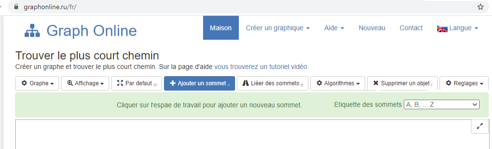
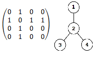
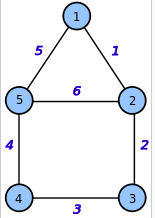
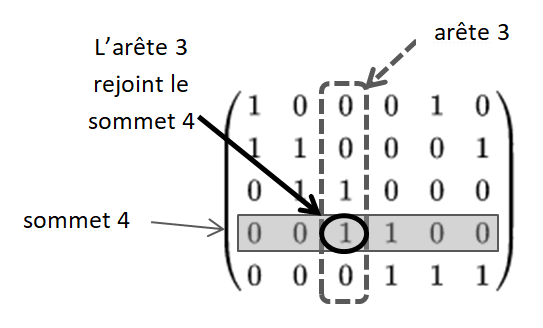
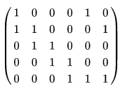

Rappels sur les graphes
Un graphe est une structure qui contient des sommets (ou nœuds) et chacune des paires de sommets associées est appelée arête. Un graphe peut être orientés ou non.

- Orienté signifie que les arêtes ont une direction, la personne A peut aimer la personne B mais la personne B peut ne pas aimer la personne A.
- Non orienté signifie que les arêtes ont 2 directions. Si la personne A serre la main de la personne B, cela signifie également que la personne B serre la main de la personne A.
On a vu précédemment qu'un réseau social peut-être assimilé à un graphe dont :
- les sommets, ou nœuds, sont les individus.
- Les arêtes sont les liens entre les individus.
Par exemple qui sont les influenceurs de ce réseau social ?
Des calculs sur les graphes nous permettent de déterminer qui au centre de ce groupe, si les personnes au centre sont proches des autres et si les membres du groupe sont éloignés les uns des autres.
A partir d'un graphe on peut définir les mesures suivantes :
- La distance entre deux sommets est le nombre minimum d'arêtes qu'il faut parcourir pour aller d'un sommet à un autre.
- L'écartement (ou excentricité) d'un sommet est la distance maximale entre ce sommet et tous les autres sommets du graphe.
- Le centre d'un graphe est le (ou les) sommet(s) dont l'écartement est minimal. Un graphe peut avoir plusieurs centres.
- Le rayon d'un graphe est l'écartement d'un centre du graphe.
- Le diamètre d'un graphe est la plus longue distance entre deux sommets de ce graphe.
Constellation
Aller sur la page : https://castor-informatique.fr/questions/2017/2017-FR-11-graph-isomorphism/
Déplacer les ronds bleus de gauche pour obtenir exactement la figure de droite.
Aide : On peut remarquer qu'il y a exactement un sommet avec une seule arête. On peut placer ce sommet, ainsi que le sommet voisin auquel il est relié.
Aide : On peut remarquer qu'il y a a exactement un sommet avec une seule arête. On peut placer ce sommet, ainsi que le sommet voisin auquel il est relié. On peut alors progresser en plaçant les trois sommets voisins. Et de là , on peut placer les quatre derniers sommets et compléter la figure.
Ce défi illustre le problème de faire correspondre un graphe, c'est à dire un ensemble de sommets liés par des arêtes, avec un autre graphe ayant la même structure.
Ce problème, connu sous le nom d'isomorphisme de graphe, est particulièrement difficile : il n'existe aucun algorithme capable de résoudre efficacement ce problème pour des graphes quelconques.
Néanmoins, pour des graphes particuliers, comme par exemple ceux que l'on a considérés ici, il existe de nombreuses astuces permettant de mettre un graphe en correspondance avec un autre sans y passer des heures. Il est possible de programmer de telles astuces, comme par exemple celle décrite ici, qui consiste à étudier le nombre de voisins (le degré) de chaque sommet.
Graph Online
La suite de cette activité est réalisée avec le logiciel en ligne open source Graph Online. Ouvrez dans un navigateur Graph Online sur le site Web suivant : https://graphonline.ru/fr/
Si ce n'est pas déjà la cas, changer les Etiquettes des sommets en A, B, ...Z en haut à droite.
Un petit réseau social
Imaginons un réseau social possédant 8 abonnés: Alfredo, Benjamin, Camille, Danielle, Eric, Franck, Gaby et Hannah
- Alfredo est ami avec Benjamin, Danielle, Franck et Hannah.
- Benjamin est ami avec Alfredo et Eric.
- Camille n'est amie qu'avec Gaby.
- Danielle est amie avec Alfredo, Franck, Gaby et Hannah.
- Eric est ami avec Benjamin et Franck.
- Franck est ami avec Alfredo, Danielle, Eric et Gaby.
- Gaby est amie avec Camille, Danielle et Franck.
- Hannah est amie avec Alfredo et Danielle.
Les amitiés sont symétriques. On va représenter ce réseau social en utilisant les initiales de chaque abonné.
Sélectionner le bouton pour déplacer les sommets afin que les arêtes ne se croisent plus et tracer le résultat obtenu.
La représentation du graphe est très pratique pour visualiser un réseau social avec peu de sommets comme ci-dessus mais, elle devient inutilisable pour un réseau social d'un milliard d'abonnés. Par ailleurs, elle ne permet pas de faire de calculs mathématiques ou de programmer des algorithmes. Il faut donc utiliser d'autres outils.
Matrice d'adjacence
La matrice d'adjacence d'un graphe est un tableau qui indique les arêtes qui lient des sommets entre eux sous forme de 0 et de 1 : soit 1 si le lien existe et 0 sinon. Pour un graphe donné la matrice d'adjacence associée est unique.
| |||||||
| |||||||
| |||||||
| |||||||
| |||||||
| |||||||
| |||||||
|
Remarquez la troisième ligne et la troisième colonne : ce sont les mêmes puisque le graphe n'est pas orienté.
Matrice des distances
Un autre outil est la matrice des distances donnant l'écartement (ou excentricité) entre deux sommets.
| |||||||
| |||||||
| |||||||
| |||||||
| |||||||
| |||||||
| |||||||
|
A | B | C | D | E | F | G | H |
|
Centres, rayon, diamètre
Matrice d'incidence
Comme la matrice d'adjacence, la matrice d'incidence est un autre outil qui permet de décrire un graphe.
La matrice d'incidence d'un graphe est un tableau qui indique pour chaque sommet les arêtes qui arrivent sur ce sommet sous forme de 0 et 1.
Exemple :
Prenons le cas du graphe ci-contre. Il possède 5 sommets et 6 arêtes, la matrice d'incidence aura donc 5 lignes et 6 colonnes :
- le sommet 1 est l'aboutissement des arêtes 1 et 5
- le sommet 2 est l'aboutissement des arêtes 1, 2 et 6
- le sommet 3 est l'aboutissement des arêtes 2 et 3
- le sommet 4 est l'aboutissement des arêtes 3 et 4
- le sommet 5 est l'aboutissement des arêtes 4, 5 et 6
- Combien de lignes et de colonnes comporte la matrice d'incidence du réseau social étudié ?
- En utilisant le menu sous le bouton span> , compléter la matrice d'incidence ci-dessous avec les résultats.
- Identifier les arêtes en positons X, Y et Z.
ce qui donne la matrice d'incidence :
 On remarque que chaque colonne a une somme égale à 2, puisque chaque arête a deux extrémités.
On note trois en positons du tableau par les lettres X, Y et Z.
| ||||||||||
| X | |||||||||
| ||||||||||
| Y | |||||||||
| ||||||||||
| ||||||||||
| ||||||||||
| Z |